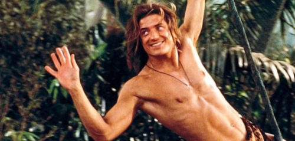

Hero versus villain: it's a tale as old as time. And depending on who you are, you're bound to love rooting for
one
or the other (or maybe the anti-hero or anti-villain). But let's face it: a good story needs more a protagonist
and antagonist. Archetypes and tropes are typically used to fill out our favorite characters. No doubt that you've
heard of all the usual socially-masculine archetypes: jock, warrior, geek, mentor, tortured
artist, the dark and brooding, and the list goes on.
Many of these traits are borne from traditional masculine roles and views. There's not always a lot of room for
emotional depth, or if there is, it can be downright problematic (I'm looking at you, Edward Cullen).
Enter the himbo!
If you aren't familiar with the term, it's a portmanteau of "him" and "bimbo".
The himbo trope gives us a man who may not have the highest IQ, but he definitely has the EQ and deep respect for
other men and women. He's kind, good-hearted, and sometimes his "himboism" belies deeper traits, but not
always—and that's ok! Ultimately, a himbo is defined by "kindness".
Urban Dictionary
has some interesting definitions for himbo, but the overall vibe is an attractive man—sometimes buff,
sometimes
not—who isn't
particularly bright, yet is wholesome, kind, and respectful to all without ulterior motives. They are sometimes
referred to as having "golden
retriever energy".
You might be surprised that the slang "himbo" first appeared in 1988! Although, it wasn't really until the
last ten
or twenty years that the word started seeing usage in pop culture. Himbos are just one of many character tropes and
though sometimes, people may exude trope-y characteristics, it's important to not define people by those
characteristics. People are real afterall, and not the characters that they play.
But that doesn't stop us from loving the himbo character!
The term himbo has received a range of reactions from entertainers who often portray them on screen.
When Keanu Reeves first heard the word, he responded with laughter, saying "I love that! I read that and
laughed my head off."
Not everyone shares that sentiment, and it's easy to see why when himbos are not defined by their
intelligence—in fact, just the opposite. This can lend itself to the stereotype of you can be brainy or you
can be brawny/beautiful, but you can't be
both. This is an extremely harmful stereotype that hurts both men and women.
One of the differences from the harmful "brawn/beauty doesn't equal brain" stereotype is that himbo characters
can be
smart, but may choose not to exhibit their intelligence until some catalyst, such as in a time of need. Although,
sometimes they really are just lovable oafs. Overall, himbos tend to have a higher EQ than IQ—and himbo fans
love them for it.
This may stem from our modern society that is just beginning to acknowledge how the "traditional
masculinity" of yesteryear is terribly
damaging to both men and women. Toxic masculinity still prevails in many spheres of life, hurting men by telling
them that emotions are shameful, and hurting women by putting them lower in the social hierarchy. Himbos represent a
man whose heart is filled with kindness and respect for those around him—and he truly means it.
Even before the term himbo was well known, himbo characters were popular across all forms of media.
Let's take a look at some of the most popular and beloved himbos:
Movies
Thor from Marvel's Thor (Chris Hemsworth)
George from George of the Jungle (Brendan Fraser)

Kronk from The Emperor's New Groove (voiced by Patrick Warburton)
TV
Jake Peralta from Brooklyn 99 (Andy Samberg)
Jason Mendoza from The Good Place (Manny Jacinto)
Vash the Stampede from Trigun (VA Johnny Yong Bosch)
Video Games
Hien Rijin from Final Fantasy XIV (VA Andrew Koji)
Itto Arataki from Genshin Impact (VA Max Mittelman)
Ryuji Sakamoto from Persona 5 (VA Max Mittelman...again!?)
If a character is only defined as a "dumb, handsome, kind" man it sends bad messages.
Are we saying that only dumb men can be kind? Does kindness make a man dumb? Or are handsome men intrinsically dumb?
It doesn't take much to imagine the kind of negativity people could conjure up from the
himbo trope. On the flip side of that, there exist many real-world examples of types of toxic "masculinity": alpha
males, incels, the Nice Guy™,
the PUA...and sadly, the list goes on.
So is it any wonder that himbos have become a "safe place" character that many fans can rely on for a dose
of goodness and wholesome kindness in a world that so desperately needs those things?